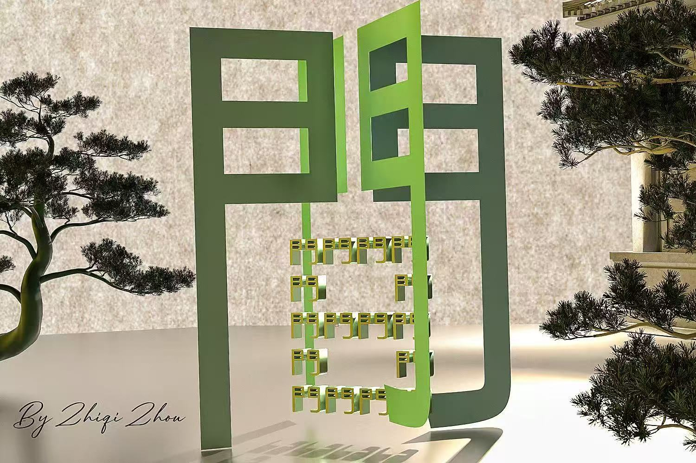
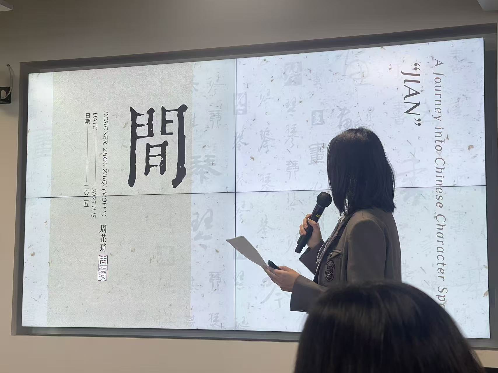
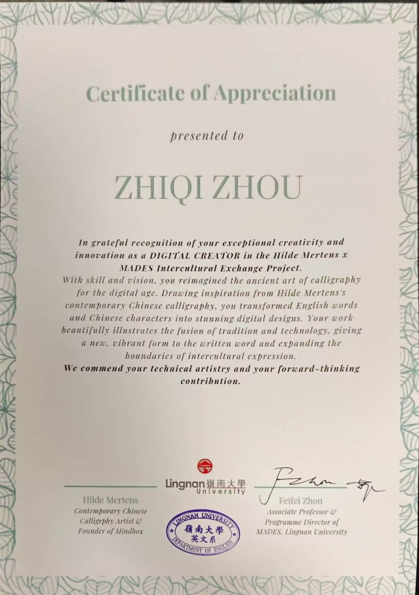
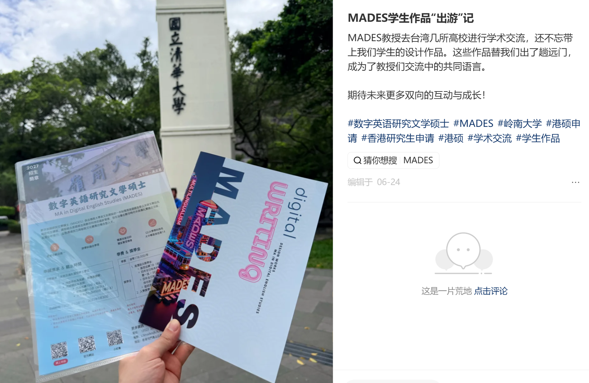
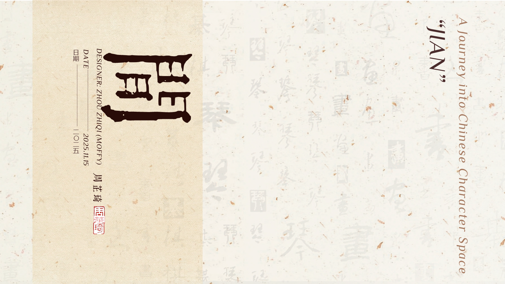

项目 06 · 运营助理 / 创作者 · 2025.09—2025.12
間
跨文化汉字数字化创作
Hilde Mertens×MADES 跨文化项目。以 Blender 把“門、日、間”的字形关系转化为空间、光与距离的动态作品。

01 / INSPIRATION & MOTION
门框住光，也为彼此留下空间。
“站在一起，但不要靠得太近：因为庙堂的柱子彼此分立，橡树和柏树也不在彼此的阴影里生长。”纪伯伦 · 《先知》
字形转译
从“門 + 日 = 間”出发，把门、太阳和间距拆解为可旋转的三维结构，让同一个汉字从不同视角产生不同理解。
独立创作
自学 Blender，完成建模、材质、镜头运动与动画输出，用数字媒介表达汉字中的空间哲学。
02 / POSTCARD
让数字作品离开屏幕，成为可以被带走的文化载体。
正面保留作品的空间与光影，背面用中英文说明“門”与“間”的概念，使作品能够进入展览、交流与赠阅场景。
01 — 02
03 / PRESENTATION & AWARD
从建模作品，到一次完整的全英文文化表达。

01 — 02

作品获“优秀创作者”证书认可，肯定其数字创意、技术表达与跨文化沟通价值。
04 / OPERATION & GROWTH
既是创作者，也是把项目成果推向公众的运营协作者。
协助项目宣发运营和视频剪辑；主导项目成果作品集的视觉设计与落地。学生作品随后送展台湾，成为跨校学术交流中的共同语言。

01 — 02
05 / FULL DECK
完整创作叙事，保留在 13 页原始演示中。
逐页原样导出，不改动排版。点击图片或按钮可依次浏览字源、建模过程、旋转视角、灵感诗句与最终呈现。

01 — 13